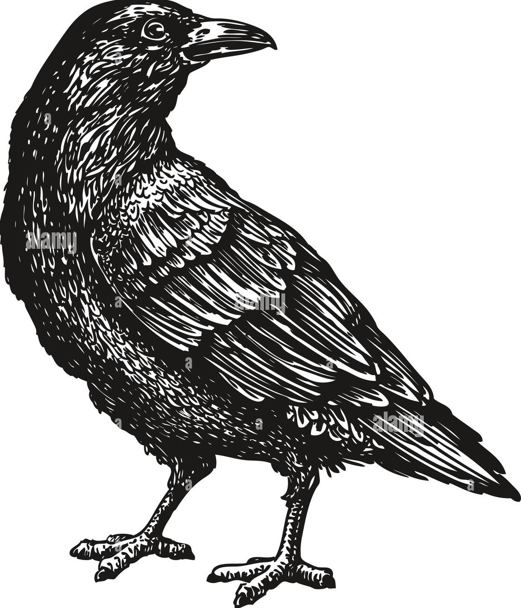

Hello. I'm Shweta Prasad.
CV // Github // Twitter //
always: shweta[dot]prasad[dot]402@gmail.com
I am from Thrissur, Kerala in India. Pictured behind me are coconut trees, which I cannot climb (yet). Leslie Lamport and an education in computer science have clouded my vision, as a result of which I am unable to read things that are not LaTeX formatted.
I am currently looking for Ph.D positions and would be happy to talk if your interests and mine align.
I was an IMPRS MMFD scholar during my M.Sc in Neural and Behavioral Sciences at the Graduate Training Center for Neuroscience, University of Tübingen, where I made crows gamble at Andreas Nieder's lab. I currently work as a research intern at Ziad Hafed's Active Vision Lab at the Werner Reichardt Center for Integrative Neuroscience, where I study how informative shapes of neuronal spikes can be about neuronal physiology and function.
I did my undergrad at Ashoka University, where I worked with Mahavir Jhawar and Subhashish Banerjee for my bachelor thesis on compression schemes that can incorporate deep probabilistic models of image data. While there, I was fortunate to work with Bittu Rajaraman and his neuroethology lab, where I studied call pattern production and recognition in bushcrickets endemic to the Western Ghats of India.
While my ultimate research interests are at the intersection of complex systems, neuroscience and natural behaviour, my primary interest lies in understanding the neural scaffolding of decision making in the brain, and in particular, how serotonin affects it.
Here are some things that I've done :

"Caw" - crow, circa 1989
-
do crows use confidence judgements to decide how long to wait for rewards?
// report // slides -
how may serotonin affect patience? an average reward RL model for an interval timing task, based on a series of very cool papers from Miyazaki et. al
// report // slides -
an Asymmetrical Numeral Systems based compression codec, following this paper by Jarek Duda, et. al
// code -
some fun stuff to read, on
// the statistical theory of machine learning // Alice Gridlocked // gendered migration during the India-Pakistan partition (mapped) // the majority problem in stomatal patchiness // simulating forest fires